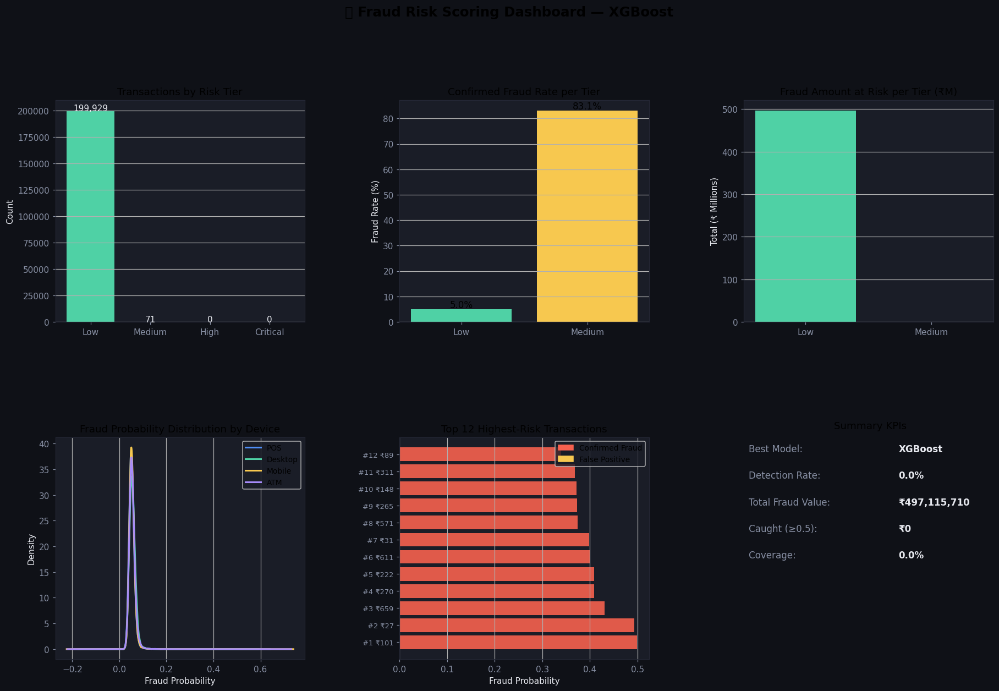
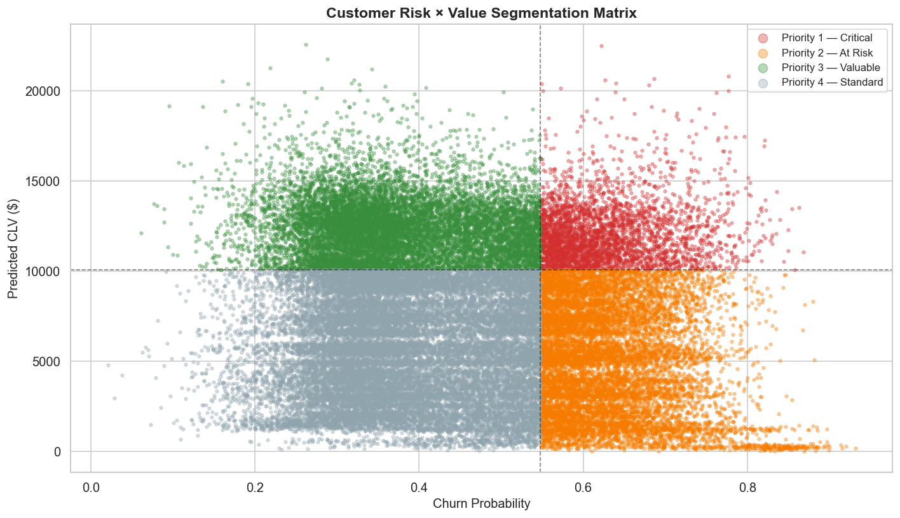
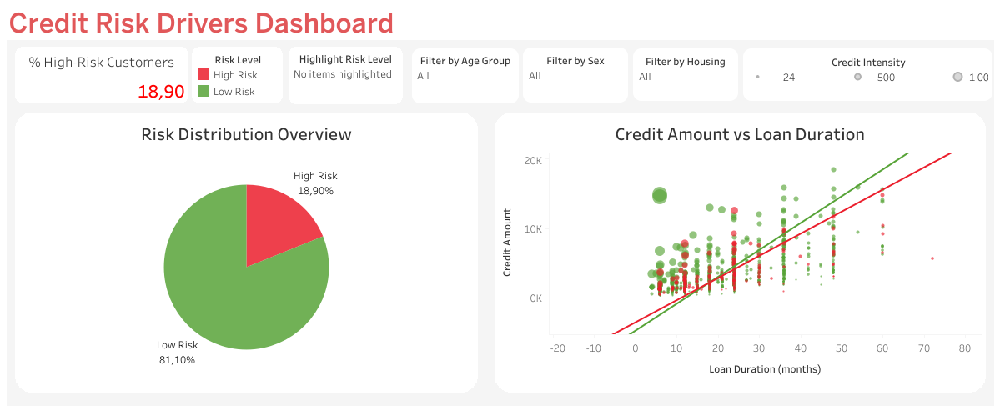
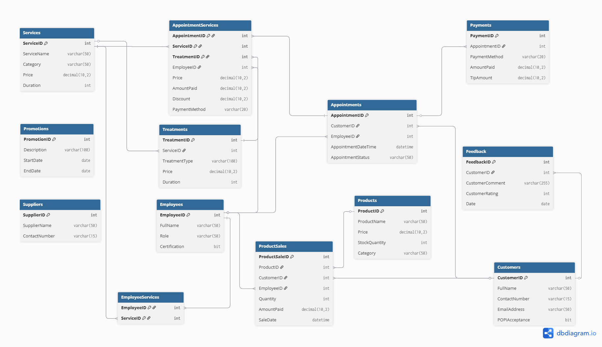
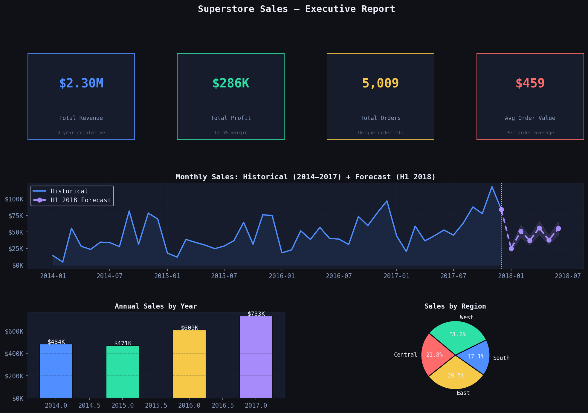

// github activity
I build end-to-end data solutions — from raw datasets to dashboards that drive real business decisions. 3rd-year Data Science & BI student at Belgium Campus ITversity, seeking a WIL programme or an Internship
Goitsemang Baloyi
// Data Scientist & BI Student
001 — about me
3rd-year Bachelor of Computing student specialising in Data Science and Business Intelligence at Belgium Campus ITversity, Pretoria. Available for WIL programme or an Internship.
I've built five+ real data projects spanning machine learning, business intelligence, SQL engineering, and time-series forecasting — all on real datasets at scale, structured the way production systems are actually built.
I led a team as Project Lead at a AI-Powered Data Analysis internship at Excelerate — learning that great data work is as much about communicating insights as building models.
technical skills
Programming Languages
Data Science & Machine Learning
BI & Visualisation Tools
Databases & Data Engineering
Tools & Platforms
Ingest & Clean
Pandas · SQL · Excel
Engineer & Model
Scikit-Learn · XGBoost
Explain
SHAP · Feature Importance
Visualise
Tableau · Power BI
Deliver Insight
Dashboards · Reports
002 — projects
Five+ end-to-end projects across machine learning, business intelligence, SQL engineering, and forecasting.

// FEATURED PROJECT
PYTHON · MLA 6-stage production-grade ML pipeline on 200,000 transactions — EDA → Feature Engineering → Model Training → Threshold Optimisation → SHAP Explainability → Risk Dashboard.

// PROJECT 02
PYTHON · MLDual ML targets — churn classification and CLV regression — across 50,000 banking records. SHAP-driven 2×2 retention matrix for business stakeholders.

// PROJECT 03
TABLEAU · BIIntegrated demographic and transaction data. Engineered risk scores, cash flow features. Two interactive Tableau dashboards — live on Tableau Public.

// PROJECT 04
SQL · DATABASEFully normalised (3NF) relational database using SQL Server with stored procedures, triggers, views, indexes, and role-based access control (RBAC).

// PROJECT 05
PYTHON · FORECASTINGTime-series forecasting pipeline with 8 engineered features — lag variables, rolling averages, cyclic month encoding. Random Forest vs Linear Regression comparison.
003 — experience & education
APR 2026 – MAY 2026
Project Lead — AI-Powered Data Analysis Internship
Excelerate · Remote
AUG 2021 – OCT 2022
Mathematics Tutor
Tutors on Call · Pretoria
SEP 2023 – PRESENT
Bachelor of Computing Student
Belgium Campus ITversity · Pretoria
Project Lead — AI-Powered Data Analysis
EXCELERATE · REMOTE · APR 2026 – MAY 2026
Bachelor of Computing — Data Science & BI
BELGIUM CAMPUS ITVERSITY · 2023 – PRESENT
004 — Certifications
Forage – Deloitte
Data Analytics Job Simulation
Data analysis · Forensic technology
February 2026
Forage – BCG X
Data for Decision Makers Job Simulation
Campaign Performance Analysis · Communicating Findings
February 2026
Forage – Mastercard
Cybersecurity Job Simulation
Phishing email simulation · Interpreting results
March 2026
Netcampus Group
Introduction to Data Analytics
April 2026 · Nr711004
Netcampus Group
Introduction to Artificial Intelligence
April 2026 · Nr696660
Netcampus Group
Introduction to Cybersecurity
April 2026 · Nr696650
005 — contact
I'm seeking a WIL programme or an Internship in Data Science, Business Intelligence, or Machine Learning. If you're building a data team — let's talk.
A WIL programme or an internship where I can contribute from day one — real projects, real data, real impact.
Strongest areas: Data Science, Business Intelligence, and Machine Learning
Most excited about: financial services, banking, retail analytics, and technology consulting.
Based in Pretoria — open to Pretoria/Johannesburg and remote opportunities.
// github activity